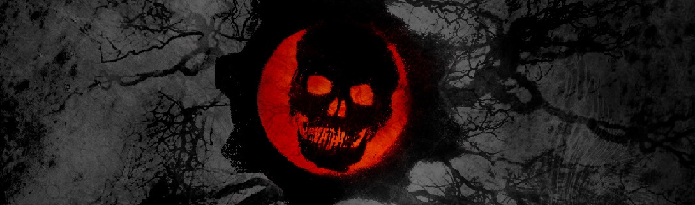

CONCLUSION
How to Beat Gears of War 3 Horde on Insane Difficulty
This game mode is a very fun way to play Gears of War 3 even if you do not like the campaign or regular multiplayer
matches. There is nothing like a day of slaughtering aggressive hostile inhabitants of a planet.
The game requires much focus and is best played without multitasking with any potential distractions. It is also
best played in one sitting if possible, for if you quit at a random round, you may start from that round again
in the future, but not with all your progress. You will start with your default weapons, no fortifications, and
only 1,000 units of cash to spend. which makes it very difficult.
Insane difficulty really is insane and is very very difficult to play. Just following these steps and suggestions is
not enough for anyone to beat Horde. They are simply strategies that are useful. Anyone planning to beat Horde on insane
has to be a very good gamer and has to know the game mechanics well to get past even the first of the 50 rounds.
Whether or not you choose to take on the challenge of playing on Insane, play Horde and see for yourself how fun it
really is! And see how good you can get and grade yourself on any of the point systems available! Enjoy Killing Grubs, and Good Luck!